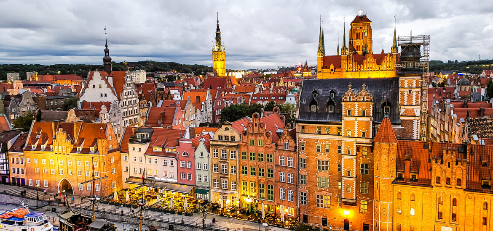

Дата і місце народження: 28 липня, 2004 року, м. Київ
Освіта: СШ №185 м. Київ; НТУУ "КПІ", м. Київ.
Гданськ (пол. Gdańsk) — місто на півночі Польщі, лежить на березі Гданської затоки Балтійського моря, у гирлі річки Вісла, столиця Поморського воєводства. Гданськ — культурний, науковий та економічний центр, а також потужний транспортний вузол Північної Польщі. Місто є великим портом на Балтійському морі, центр промисловості, зокрема нафтохімічної і машинобудування (розвинені суднобудування і судноремонт).
